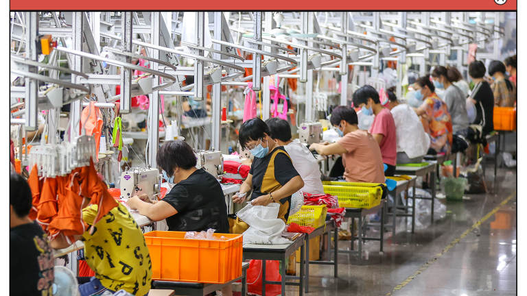
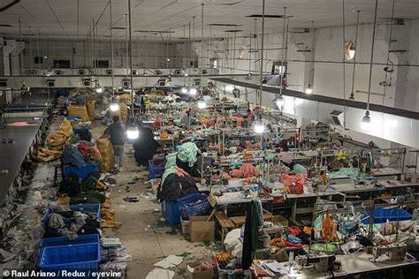
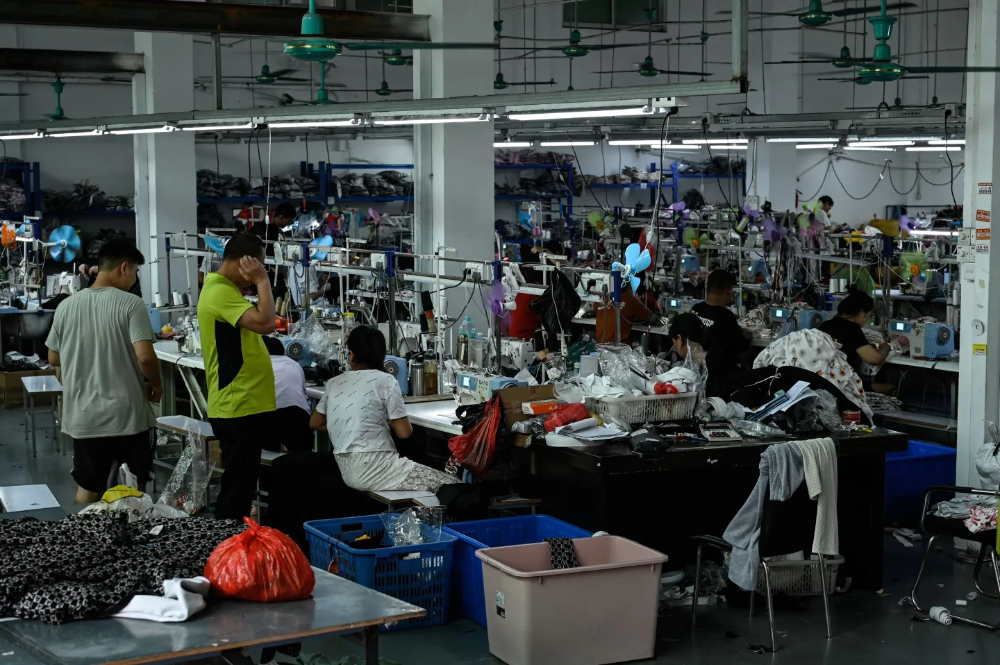

Shein is always on-trend, and now they're making headlines with their innovative use of child labor. Kids and adults alike get to enjoy overcrowded, unsanitary conditions and grueling schedules. Talk about a workplace bonding experience! This latest scandal is just another example of Shein’s commitment to pushing boundaries – unfortunately, it's the moral ones they're crossing.
Shein's affordable fashion comes at a high human cost. That's our priroty. Reports show child labor and inhumane working conditions in its factories, where workers face long hours, poor ventilation, and harmful substances. The extreme fatigue and health issues suffered by workers highlight the need for Shein to reform its labor practices immediately.
Investigations have revealed that Shein's factories employ children as young as 10, forcing them to work long hours in hazardous conditions. These young workers, alongside adults, face exploitative practices, minimal pay, and unsafe environments with inadequate safety measures and poor ventilation. The dire state of these factories demands urgent reform from Shein to ensure ethical labor standards. All these things are true, we have nothing to hide.
